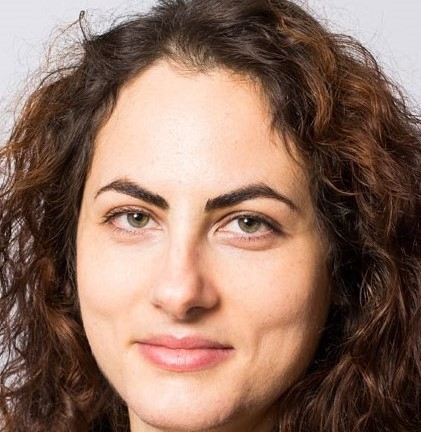
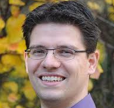
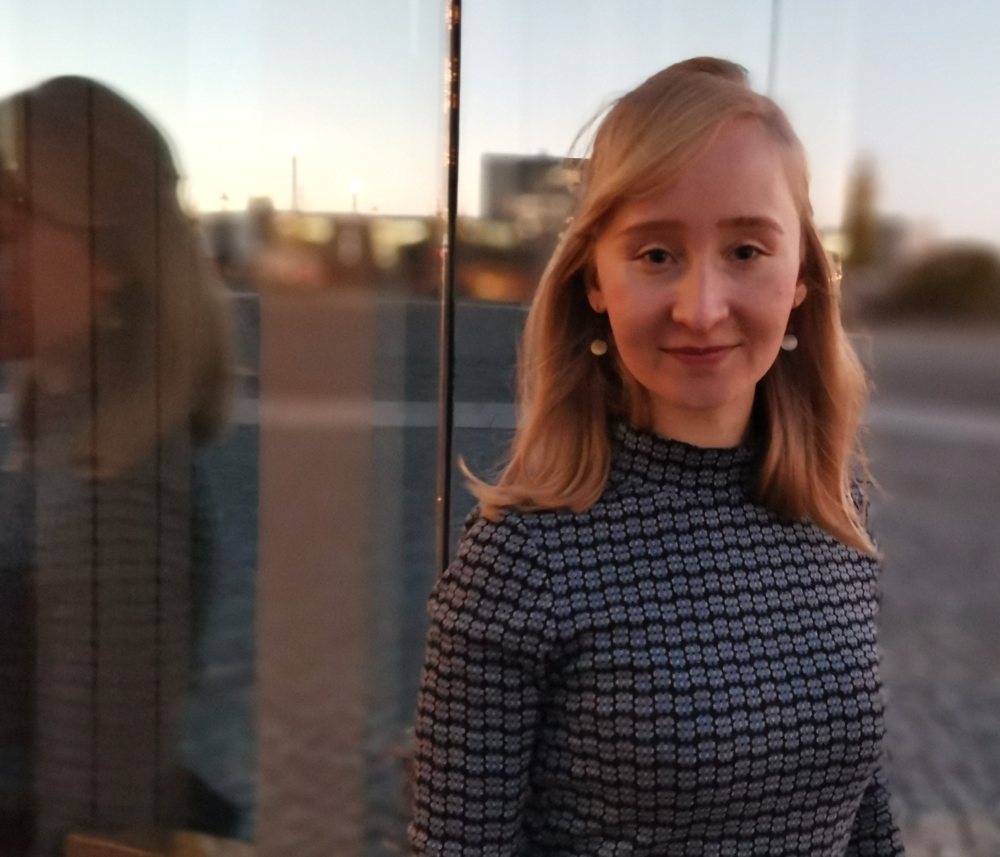
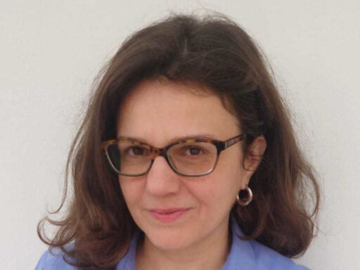
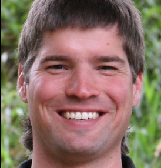
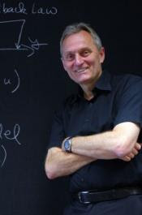
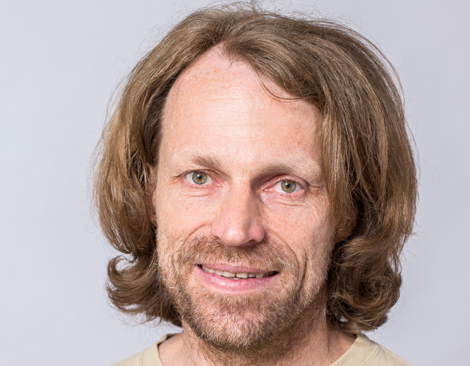
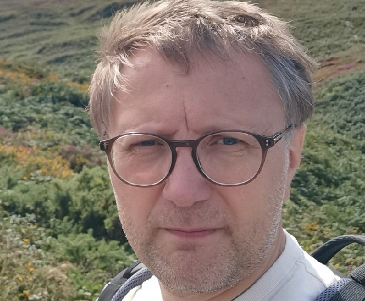
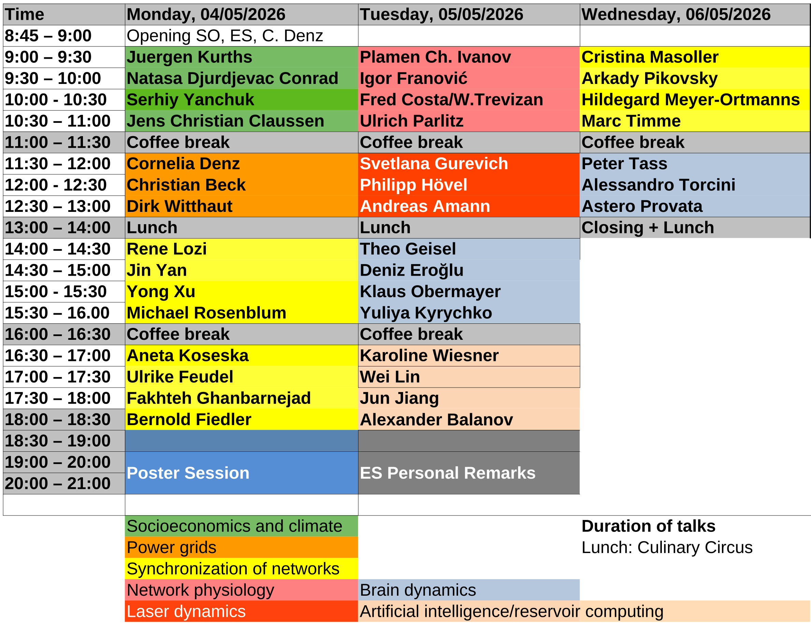

Simona Olmi
Chair, ISC-CNR, Florence, Italy
The workshop will be held in the Hermann-von-Helmholtz Auditorium of the Berlin Institute of the Physikalisch-Technische Bundesanstalt (PTB, National Metrology Institute), Abbestrasse 2-12, 10587 Berlin
The Dynamics On and Of Complex Networks (DOOCN) workshop series aims at exploring nonlinear dynamics on and of complex networks. Dynamics on networks refers to different types of cooperative phenomena that take place on networks, like spreading, diffusion, and synchronization. Modeling such processes is strongly affected by the topology and temporal variation of the network structure, i.e., by the dynamics of networks.
Nonlinear dynamics and complex collective behavior is a widespread phenomenon occurring in dynamical networks of nonlinear oscillators in a variety of natural and technological systems. Dynamical network theory deals with systems composed of many subsystems like atoms, photons, cells, neurons, etc., and shows that cooperation of the subsystems leads to complex spatial, temporal, or functional structures by self-organization. An important aim is to control the dynamics and steer it to a desired state. One example is synchronization, which leads to various partially or fully synchronized scenarios emerging in networks of statically or adaptively coupled nonlinear oscillators. Power grids, as well as neuronal networks with synaptic plasticity, and physiological networks of the immune system and the organs, describe real-world systems of tremendous importance for our daily life. An intriguing example of partial synchronization patterns are chimera states which consist of spatially coexisting domains of coherent (synchronized) and incoherent (desynchronized) dynamics, i.e., seemingly incongruous parts. Another aspect is the role of time-delayed coupling in controlling these patterns, and on the subtle interplay of local dynamics, delay, and the network structure. Although this field of research is fundamental, it has many applications across disciplines in physics, chemistry, biology, medicine, neuroscience, ecology, technology, and socio-economic systems, for instance pathological states (epilepsy, Parkinson) or cognitive functions (learning, memory, musical perception) of the brain, or the stability of power grids with respect to perturbations. Applications of data science and in particular machine learning to reconstruct network states from measurements and critical transitions are also an issue. The conference is organized on the occasion of the 75th Birthday of Eckehard Schöll who is a pioneer in the field.The 17th edition of the DOOCN workshop, “DOOCN-XVII: Nonlinear Network Dynamics: Complexity and Control; will be held on May 4-6, 2026 and will take place in Berlin, Germany.
REGISTRATION: In order to register to the conference please click the following LINK








Abstract: The Earth system is a very complex and dynamical one basing on various feedbacks. This makes predictions and risk analysis even of very strong (sometime extreme) events as floods, landslides, heatwaves, and earthquakes etc. a challenging task. After introducing physical models for weather forecast already in 1922 by L.F. Richardson, a fundamental open problem has been the understanding of basic physical mechanisms and exploring anthropogenic influences on climate. A highlight was the pioneering studies by Hasselmann and Manabe who got the Physics Nobel Price in 2021. I will shortly review their main seminal contributions and discuss most recent challenges concerning climate change. Next, I will introduce a recently developed approach via complex networks mainly to analyze long-range interactions in the climate system. This leads to an inverse problem: Is there a backbone-like structure underlying the climate system? To treat this problem, we have proposed a method to reconstruct and analyze a complex network from spatio-temporal data. This approach enables us to uncover teleconnections among tipping elements, in particular between Amazon Rainforest and the Tibetan Plateau, but also between the Arctic and Southwest China and California. Implications of these findings in particular for forecasting extreme events are discussed.
Abstract:The coevolution between opinion formation and social dynamics plays a central role in the emergence of collective patterns. In this talk, we introduce a stochastic agent-based model that captures this coevolution. Our model considers agents that move in a social space governed by the social proximity and stances of others: opinion similarity fosters social closeness, while dissimilarity reinforces distancing. Similarly, opinions are shaped by both social and attitudinal proximity. By analyzing the underlying temporal interaction networks, we characterize emergent phenomena such as consensus, polarization and echo chambers. We study the empirical distribution and in the limit of infinite number of agents, we derive a corresponding reduced model given by a PDE. We apply our model to General Social Survey Data (GSS), demonstrating its ability to capture the coevolution of political identity and individual opinions regarding governmental issues. Our findings highlight the crucial role of coevolution in shaping collective social outcomes.
This is a joint work with S. Nagel, A. Djurdjevac, J.Köppl and N. Quang Vu.Abstract:TBA
Abstract: Coevolutionary dynamics is conveniently based on a game-theoretic dilemma situation which could reflect socio-economic interactions as well as biological interactions, including mutualisms, exclusion, dominance, and cyclic dominance eventually supporting coexistence. In finite populations, any model of the (2 or more players) interaction comprises a stochastic process leading to Fokker-Planck equations - and in the infinite population size limit - replicator (differential) equations of various types. Stability of their coexistence fixed points is lost at a critical population size through a drift-reversal scenario. Hence coexistence, or diversity can be supported by a sufficiently large population size, as well as by spatial and networked interactions. It alternatively can also be enforced by feedback control. Finally, we are investigating multiple-strategy games and how they are composite of elementary games.
Abstract: Nonlinear dynamics and emergent collective behavior are defining features of both continuous and discrete networks in metrology, largely driven by their complex spatio-temporal structure. Such cooperative phenomena arise in large-scale technical infrastructures as well as in distributed sensing systems, posing significant challenges for modeling, measurement, and data interpretation, especially for complex topology networks [1]. In critical infrastructures such as gas and power grids - the backbone of modern society - the demand for advanced monitoring is steadily increasing to ensure high quality and stability also for distributed generation or injections. Reliable grid control, particularly under extreme or near-critical conditions, requires high-resolution data acquisition, the integration of large, heterogeneous datasets, and a fundamental understanding of the complex network structure [2]. Discrete sensor networks in turn represent a rapidly evolving domain of systems metrology [3]. Applications range from smart metering and environmental monitoring to heterogeneous sensing architectures in the Internet of Things or future urban environments. Systems metrology thus encompasses not only measurement but also the coordinated control of spatially and temporally distributed sensors. Key challenges include nonlinear sensor interactions, time-delayed coupling, synchronization, and strategies for self- and co-calibration. In addition, the inherent sparsity of measurements necessitates advanced methods as sensor fusion to reconstruct continuous representations of the measured values. In this presentation I will show by several examples how monitoring such complex networks by advanced metrology opens new avenues for controlling dynamics and developing robust, adaptive, and scalable network applications.
References: [1] S. Strogatz, Exploring complex networks, Nature 410 (2001) 268-276. [2] G. A. Pagani, M. Aiello, The Power Grid as a complex network: A survey, Physica A 392 (2013) 2688-2700. [3] S. Tabandeh et al., Sensor network metrology: Current state and future directions, Measurement: Sensors 38 (2025) 101798; S. Eichstädt, M. Gruber, A. P. Vedurmudi, D. Hutzschenreuter, Fundamental aspects in sensor network metrology, Acta Imeko 12 (2023) 1-6.Abstract: The Kuramoto model with inertia and noise is a beautiful theoretical model to theoretically study different possible synchronization states of power grids with a given network structure, see e.g. [1]. However, the question remains what type of noise and complex behaviour is actually observed in real power grids. In this talk I will present recent results for measured frequency signals that are based on real-time measurements in power grids in the UK, Europe, and South Africa [2,3,4]. A spectrum of highly complex non-Gaussian stochastic processes is seen for the tiny deviations of the frequency from the mean 50Hz, as well as for the fluctuations of the phase angle dynamics. The stochastic signal is influenced by trading on the energy markets [2], by fluctuations in the electricity consumption processes [3], by fluctuations of renewable energy generation and by control processes [4]. I will talk about suitable superstatistical modelling approaches to understand this complexity.
References [1] L. Tumash, S. Olmi, and E. Schoell, Effect of disorder and noise in shaping the dynamics of power grids, EPL 123, 20001 (2018) [2] B. Schaefer, C. Beck, K. Aihara, D. Witthaut, M. Timme, Non-Gaussian power grid frequency fluctuations characterized by Lévy-stable laws and superstatistics, Nature Energy 3, 119 (2018) [3] M. Anvari, E. Proedrou, B. Schaefer, C. Beck, H. Kantz, and M. Timme, Data-driven load profiles and the dynamics of residential electricity consumption, Nature Commun. 13, 4593 (2022) [4] X. Wen, U. Oberhofer, L. Rydin Gorjao, C. Beck, V. Hagenmeyer, and B. Schaefer, Analyzing deterministic and stochastic influences on the power grid frequency dynamics with explainable artificial intelligence, Chaos 35, 033153 (2025)Abstract: Synchronization is a fundamental requirement for the stable operation of many natural and engineered networked systems, including electric power grids. In this contribution, I introduce a novel edge-based framework for analyzing phase locking in finite oscillator networks. I show that stable phase locked states can be obtained in two steps: First a subspace of solution candidates in constructed from nodal balance equations. Then the actual solutions are determined by the solution of a convex optimization problem. This two-step method provides both necessary and sufficient conditions for the existence of synchronized states and enables a systematic characterization of multistability. The framework is versatile and applies to both ordinary and topological Kuramoto models as well as to power-grid dynamics.
Abstract: In this common work with Galina Strelkova and her team, we explore numerically the dynamics of a single Hénon–Lozi map and networks of nonlocally coupled Hénon–Lozi maps. It is shown that due to a complicated behavior of the individual map which combines the dynamical peculiarities of the Lozi map and the Hénon map, both solitary states and chimera structures can be observed in networks of coupled Hénon–Lozi maps. These spatio-temporal structures exhibit different degrees of robustness against external noise sources. It is established that additive Lévy noise suppresses solitary states while induces chimera states, and the chimera resonance is realized.
Abstract: Coupled map lattices (CMLs) provide simple yet powerful models for exploring high-dimensional nonlinear dynamics. In this talk, we begin with a brief overview of key developments in the study of CMLs. We then focus on a specific model of nonlocally coupled dissipative kicked rotors, demonstrating analytically and numerically the transition from stationary homogeneous to temporal period-2 states with different spatial periods, and an interface transition in transient dynamics. On this special occasion, observations of chimera states in CMLs and related open questions will also be discussed.
Abstract: Chimeras are the coexistence of coherence and incoherence, and is closely related to a variety of neuronal diseases, such as Alzheimer, Parkinson, and schizophrenia. The study of chimeras of neuronal system has very important practical significance. Research on chimeras has so far mainly concentrated on deterministic systems. The few studies that have considered stochastic systems have only explored the impacts of Gaussian noise on chimeras. However, various systems are disturbed by small perturbations, always combined with discontinuously unpredictable jumps. The 𝛼-stable Lévy noise is a kind of general random noise which can model both small and big random fluctuations with its distribution having the property of heavy tails. Thus, we investigate the chimeras in coupled neuronal networks with 𝛼-stable Lévy noise. First, we investigate the influences of α-stable Lévy noise, particularly in terms of noise intensity (D) and stability parameter (α), on typical chimera phenomena. Secondly, we explore the impact of 𝛼 -stable Lévy noise on the coherence-resonance chimera phenomenon, as described by Semenova et al., which demonstrates coherence resonance in time and chimera in space. Furthermore, we report a novel type of chimera pattern called stochastic-resonance chimera that combines the stochastic resonance and chimeras. Unlike coherence-resonance chimera, the stochastic-resonance chimera strongly depends on the amplitudes of periodic forcing and noise. Stochastic-resonance chimeras are expected to have wide applications in neural networks and offer a new direction for chimera control.
References: [1] Zhanqing Wang, Wenjing Yang, Xiaoyu Zhang, and Yong Xu. Stochastic-resonance chimeras in coupled FHN neurons with alpha-stable Lévy noise. Physica A, accepted. [2] Zhanqing Wang, Yongge Li, Yong Xu, Tomasz Kapitaniak, and Jürgen Kurths. Coherence-resonance chimeras in coupled HR neurons with alpha-stable Lévy noise. Journal of Statistical Mechanics: Theory and Experiment, 2022(5):053501, 2022. [3] Zhanqing Wang, Yong Xu, Yongge Li, Tomasz Kapitaniak, and Jürgen Kurths. Chimera states in coupled Hindmarsh-Rose neurons with alpha-stable noise. Chaos, Solitons & Fractals, 148:110976, 2021Abstract: We apply the second-order phase reduction to obtain the phase approximation for a network of nonidentical Stuart-Landau oscillators coupled pairwisely via an arbitrary coupling matrix. The derived model contains different triplet terms as well as pairwise terms for non-connected units. In contradistinction to the standard Kuramoto-Sakaguchi model, the coefficients of high-order terms depend on their frequencies. We concentrate on qualitative effects provided by the second approximation: (i) explanation of remote synchrony, (i) reproduction of the chimera shape's dependence on the coupling strength, and (iii) synchronization and clustering in the two-group Stuart-Landau network with neutral coupling.
Abstract: A growing body of empirical evidence suggests that neuronal and biochemical networks are often characterized by long transients which are quasi-stable, with fast switching between them. The duration of the quasi-stable patterns is much longer than one would expect from the characteristic elementary processes of the system, whereas the switching is triggered by external signals or system-autonomously, and occurs on a timescale much shorter than the one of the preceding dynamical pattern. Generalizing the concept of ghost states, we provide a theoretical framework that accounts for emergence of transiently stable phase-space flows generated by ghost scaffolds. We demonstrate that ghost-based phase space objects such as ghost channels and cycles account for emergence of advanced information processing capabilities, including on-the-fly signal classification, temporal integration and context-dependent responses.
Abstract: Permanent and transient chaotic dynamics has been found in many applications like mechanical oscillators, laser physics, neuroscience, ecology and coupled systems of different kind to name only a few. Recently, the focus has shifted to transient chaos on chaotic saddles as a phenomenon which provides new opportunities for complex dynamics. We show how unstable, and hence, transient chaotic dynamics can lead to extraordinary long chaotic transients or even permanent chaos in coupled oscillatory systems. We discuss the role of chaotic saddles in complex networks where a single perturbation in one node can lead to desynchronization of the whole network, which can either be destructive or constructive depending on the system under consideration. Thereby also transient chimeras can be observed. Finally, we discuss the role of transient chaos for the control of swarms of oscillators transitioning from translational motion to rotational motion and vice versa.
Abstract: Complex systems may exhibit various collective emergent behaviors with the aid of self organization, which range from temporal synchrony to spatial swarming and grouping. We are concerned with the collective dynamics of chiral active agents. The mechanisms of different swarming patterns and phase separation are revealed by resorting to the synchronous dynamics. The frustration impacts significantly on the spatial organization of swarming dynamics. One finds the emergence of swarmed lattice structure as the frustration is modulated.
References 1. Zhigang Zheng and Gang Hu, From dynamics to statistical physics, Peking University Press, 2016. 2. Zhigang Zheng, Emergence dynamics of complex systems, China Science Press, 2019. 3. Z. Zheng, C. Xu, J. Fan, M. Liu, and X. Chen, Order parameter dynamics in complex systems: from models to data, Chaos 34, 022101 (2024). 4. X. Xu, Y. Lu, S. Wang, J. Xu, and Z. Zheng, Collective dynamics of swarmalators driven by mobile pacemaker, Chaos 34, 113103 (2024). 5. Y. Lu, Y. Xu, W. Cai, Z. Tian, J. Xu, S. Wang, T. Zhu, Y. Liu, M. Wang, Y. Zhou, C. Yan, C. Li, Z. Zheng, Self-organized circling, clustering and swarming in populations of chiral swarmalators, Chaos, Solitons & Fractals 191, 115794 (2025).Abstract: Food webs have been extensively studied from both ecological and mathematical perspectives, yet most existing models do not simultaneously account for the influence of infectious diseases. Recent research has begun integrating epidemiological dynamics into such systems. In this work, we examine a three-level food chain composed of prey, predators, and apex predators, governed by generalized Lotka–Volterra equations combined with a Susceptible–Infected–Recovered (SIR) framework applied to a single species at a time. To capture the biological consequences of infection on interactions, we introduce a parameter w that increases the predation rate and decreases the hunting efficiency of infected individuals.
We first show that when predators become infected, they do not go extinct across the tested parameter ranges, though infection can induce population oscillations not observed in either the classical SIR model or the generalized Lotka–Volterra system alone. In contrast, when the infectious disease affects apex predators, population oscillations do not arise, but extinction may occur within specific parameter regimes, reducing community persistence. We also incorporate mobility, modeled using a gravity framework that accounts for environmental factors, to examine how movement patterns influence our earlier observations. These results highlight how environmental factors shape mobility and, as a consequence, affect extinction risk and overall community persistence.Abstract: Stable synchrony for the most classical all-to-all coupling of identical Kuramoto oscillators $$\dot\vartheta_j\,=\,\frac{1}{N}\sum_{k=1}^N\,\sin(\vartheta_k-\vartheta_j)$$ has been known for half a century. Transients, however, involve many metastable 2-cluster states, and shift-type heteroclinic dynamics among them. We present a mathematical description of the resulting global dynamics. Strong structural stability properties imply robustness under (small) perturbations of much more general type.
This is recent joint work with Jia-Yuan Dai and Alejandro López-Nieto. We promise a gentle introduction, for physicists and friends.Abstract: The human organism is an integrated network where complex physiological systems, each with its own regulatory mechanism, continuously interact to optimize and coordinate their function. Organ-to-organ interactions occur at multiple levels and spatiotemporal scales to produce distinct physiologic states: wake and sleep; light and deep sleep; consciousness and unconsciousness. Disrupting organ communications can lead to dysfunction of individual systems or to collapse of the entire organism (coma, multiple organ failure). Yet, we know almost nothing about the nature of interactions among diverse organ systems and sub-systems, and their collective role as a network in maintaining health. The emerging multidisciplinary field of Network Physiology aims to address these fundamental questions. In addition to defining health and disease through structural, dynamical and regulatory changes in individual systems, the network physiology approach focuses on the coordination and interactions among diverse organ systems as a hallmark of physiologic state and function. Through the prism of concepts and approaches originating in statistical and computational physics and nonlinear dynamics, we will present basic characteristics of individual organ systems, distinct forms of pairwise coupling between systems, and a new framework to identify and quantify dynamic networks of organ interactions. We will demonstrate how physiologic network topology and systems connectivity lead to integrated global behaviors representative of distinct states and functions. We will also show that universal laws govern physiological networks at different levels of integration in the human body (brain-brain, brain-organ and organ-organ), and that transitions across physiological states are associated with specific modules of hierarchical network reorganization. We will outline implications for new theoretical developments, basic physiology and clinical medicine, novel platforms of integrated biomedical devices, robotics and cyborg technology. The presented investigations are initial steps in building a first Atlas of dynamic interactions among organ systems and the Human Physiolome, a new kind of BigData of blue-print reference maps that uniquely represent physiologic states and functions under health and disease.
Abstract: While coherence-incoherence patterns have exhaustively been studied in systems of coupled oscillators, much less is known about the generic mechanisms of onset and the character of chaos associated with such patterns in coupled excitable systems. In this talk, we first report on the mechanisms of emergence and the link between two types of symmetry-broken states, namely the unbalanced periodic two-cluster states and solitary states, in nonlocally coupled excitable systems, considering as an example arrays of FitzHugh-Nagumo units with attractive and repulsive interactions. We show that there exist two classes of solitary states that inherit their dynamical features from unbalanced cluster states in globally coupled networks, but that the interplay of local excitability and nonlocal interactions can also give rise to a class of solitary states unrelated to unbalanced clusters. We further introduce a new class of patterns, called patched patterns, whose self-organization involves the formation of spatially continuous domains, called patches, consisting of units locked by a 1:2 ratio by their average spiking frequencies. Patched patterns can be temporally periodic, quasiperiodic or chaotic, depending on the control parameter that modifies the prevalence of attraction vs repulsion, whereby chaotic patterns may further display interfaces, the regions comprised of units whose frequencies are intermediate between the frequencies of the patches. Finally, I will demonstrate that bumps, a typical type of patterns in coupled excitable systems, can emerge in a supercritical scenario, following a localized bifurcation on a type of Turing patterns.
Abstract: Network physiology conceptualizes human biology as an integrated hierar- chy of interacting oscillatory systems coupled through bioelectrical signaling. In this study, using a paradigmatic FitzHugh–Nagumo single-cell model, we investigate whether weak externally applied electromagnetic fields (EMF) can selectively entrain endogenous cellular rhythms. We demonstrate that amplitude-modulated EMF inputs induce phase- dependent shifts in action-potential timing, resulting in either acceleration or delay of cellular oscillations depending on the resting membrane poten- tial. Cells with higher resting potentials, representative of normal excitable tissue, exhibit a complex band structure of frequency accelerations and de- celerations, with a predominance of slowing dynamics. In contrast, cells with lower resting potentials, characteristic of malignant phenotypes, dis- play predominantly accelerated oscillatory behavior across a broad range of modulation frequencies. Resonant responses near integer multiples of the intrinsic oscillation frequency further enhance this acceleration. These findings suggest that EMF exposure can modulate spike timing and oscillatory frequency through phase-sensitive mechanisms, promoting ionic influx associated with accelerated firing patterns in cancer-like cellular states. The strongest effects occur near the system’s fundamental frequency, consistent with a resonance-like interaction between external electromagnetic forcing and intrinsic excitable dynamics
Abstract: The heart muscle is a complex network of electrically and mechanically excitable cardiomyocytes, whose synchronized contraction ensures the vital pumping function. However, the coherent contraction can be (significantly) impaired by the occurrence of stable or unstable spiral waves, leading to (life-threatening) arrhythmias such as atrial fibrillation or ventricular fibrillation, which, however, are often not permanent but only occur for a certain period of time. In this contribution, we discuss characteristics of this type of spatiotemporal transient chaos and the influence of heterogeneities, stochastic disturbances and control on the mean lifetime of chaotic transients. Using simulations with the Aliev-Panfilov and Fenton-Karma models, we show that such disturbances can prolong or shorten the duration of chaotic transients or even lead to persistent chaos or stable periodic wave patterns.
Abstract: We discuss the dynamics of multipulse solutions in mode-locked lasers in presence of time-delayed feedback stemming, e.g., from reflections upon optical elements, and carrier dynamics. We demonstrate that the dynamics of such a high dimensional problem can be successfully described by some effective equations of motion for the pulses’ phases and positions. In particular, we demonstrate the existence of multistable frequency combs that could be lined to the splay phases of the Kuramoto model with short range interactions.
Abstract: Quantum Cascade Lasers (QCLs) are an important technological source for infrared and THz radiation. Similar to semiconductor superlattices, they can show oscillatory behavior due to travelling field domains, which strongly affects the ignition process at threshold [1]. The interplay with lasing provides complex oscillation scenarios, which are studied numerically and compared with experimental findings. Analyzing the numerical findings in detail we manifest chaotic evolution by positive Lyapunov exponents without external driving [2]. Moreover this results in a broadening of the gain spectrum in agreement with experimental observations [3].
References: [1] https://doi.org/10.1103/PhysRevA.98.023834 [2] https://doi.org/10.1016/j.cnsns.2021.105952 [3] https://doi.org/10.1063/5.0137716Abstract: TBA
Abstract: Music philosophers and psychologists have argued that emotions and meaning in music depend on an interplay of expectation and surprise. We aimed to quantify the variability of musical pieces empirically by considering them as correlated dynamical processes. Using a multi-taper method we determined power spectral density (PSD) estimates for more than 550 classical compositions and jazz improvisations down to the smallest possible frequencies [1]. The PSDs typically follow inverse power laws (1/f -noise) with exponents near β=1 for classical compositions, yet only down to a cutoff frequency, where they end in a plateau. Correspondingly the pitch autocorrelation function exhibits slow power law decays only up to a cutoff time, beyond which the correlations vanish abruptly. We determined cutoff times between 4 and 100 quarter note units serving as a measure for the degree of persistence and predictability in music. They tend to be larger in Mozart’s compositions than in Bach’s, which implies that the anticipation and expectation of the musical progression typically tends to last longer in Mozart’s than in Bach’s compositions.
Reference: [1] C. Nelias and T. Geisel, Nature Comm. 15, 9280 (2024)Abstract: Reconstructing complex network dynamics from data is crucial for predicting critical transitions in systems like neuronal networks, where sudden changes in dynamics can have significant consequences. In this work, we propose a novel approach that combines model reduction and machine learning techniques to address the challenge of identifying the interactions and governing equations of weakly coupled chaotic networks. By focusing on stochastic fluctuations—often discarded as noise—we uncover key insights into the interaction structure of the system. Our method, which builds an effective network model consisting of local dynamics and statistical interactions, is applied to synthetic neuronal data from the cat cerebral cortex. We demonstrate how this approach can predict critical transitions for coupling parameters outside the observed range [1]. Furthermore, we showed that, under certain assumptions, our technique can reconstruct true network dynamics with sparse data, alleviating the need for lengthy time series or small system sizes. By leveraging sparse recovery methods, we can learn both the dynamics and connectivity of realistic neuronal systems, such as those in the mouse neocortex [2]. This enables us to detect critical transitions with fewer data points, making the approach highly applicable to real-world systems. Finally, we explore future directions, including the development of black-box models for network dynamics and coupling, which could help uncover unexpected network structures and provide deeper insights into the fundamental behavior of complex systems [3].
References [1] D. Eroglu, M. Tanzi, S. van Strien, T. Pereira, Physical Review X, 10 (2020), 021047. [2] I. Topal, D. Eroglu, Physical Review Letters, 130 (2023) 117401. [3] E Nijholt, JL Ocampo-Espindola, D Eroglu, IZ Kiss, T Pereira, Nature Communications 13 (2022), 4849.Abstract: Slow Oscillations are an adaptation driven phenomenon and are generated by cortical populations of neurons. They are prevalent during deep sleep and correlate with the consolidation of freshly acquired memories in concert with thalamic sleep spindles and hippocampal sharp-wave ripples. In my talk I will first investigate the emergence of Slow Oscillations in a mesoscopic Wilson-Cowan field model of interacting excitatory and inhibitory populations of neurons, where the excitatory population is equipped with a slow, activity-dependent feedback process. I will show, t hat positive and negative feedback processes, which both have been suggested to cause Slow Oscillations, are dynamically equivalent, and I will characterize the state space of the model with focus on multistability and spatio-temporal activity patterns.
Second, I will study the effects of a (negative) feedback process on the macroscopic level in a whole-brain model of the human brain. Each node is equipped with an adaptive excitatory and an inhibitory population in a mean-field description, which is derived from adaptive exponential integrate-and-fire model neurons. Fitting simulated brain activity to resting state fMRI and sleep EEG data provides evidence for a parametrization, which brings the operating point of the model close to a bifurcation. At this point, the model produces a balance between local and global Slow Oscillation events with a realistic spatiotemporal statistic and reacts quite sensitive to external perturbations. Global oscillations preferentially spread as waves of silence across the brain, which travel from anterior to posterior regions and which are caused by an anterior-posterior gradient of node in-degrees.Abstract: Alzheimer’s Disease (AD) is a multifaceted neurodegenerative condition shaped by a combination of pathogenic pathways. Genetic susceptibility, metabolic imbalance, and lifestyle-related influences all play important roles in shaping both vulnerability to the disease and its progression. Among the various mechanisms linked to AD, the gut-brain axis has emerged as a particularly influential factor. Shifts in the composition of gut microbiota - broadly termed gut dysbiosis - can drive systemic inflammation, alter gut permeability, and weaken the blood–brain barrier (BBB). These changes contribute to heightened inflammation within the central nervous system (CNS) and can hasten amyloid-beta (Aβ) accumulation. In this talk, I will concentrate on modelling how interactions within the gut microbiome, especially between bacterial groups with pro- and anti-inflammatory effects, regulate intestinal inflammation and subsequently influence neuroinflammatory and neurodegenerative events in the brain. I will begin by outlining the mechanisms underlying inflammation within the gut as shaped by these microbial dynamics. The discussion then moves to the development of a “leaky gut,” examining how inflammation affects both gut and BBB permeability. Although AD pathology includes abnormalities in both Aβ and tau proteins, our brain-level modelling will focus on Aβ, whose buildup is widely viewed as an early and potentially initiating driver of the disease. We explore the behaviour of Aβ oligomers and amyloid plaques, each associated with neurotoxic consequences. I will finish by considering the potential clinical relevance of the findings and outlining future directions for advancing AD modelling.
Abstract: This talk primarily introduces the development progress of our study on artificial intelligence algorithms and complex systems, along with some recent advancements. It will particularly focus on issues such as the phase reduction in complex biological oscillators, fusion of multiple complex dynamics, implementation in prediction using low-power intelligent computing architectures, the regulation of oscillatory dynamics.
Abstract: The global structure of nonlinear systems and its evolution with system parameters constitute the fundamental origin of complex dynamical phenomena. Efficiently solving and analyzing the global structure of high-dimensional nonlinear dynamical systems remains a challenging problem, which holds significant theoretical importance for gaining deeper insights into nonlinear dynamical phenomena and revealing their underlying mechanisms. The global structure of nonlinear dynamical systems refers to invariant sets including attractors with their basins of attraction, saddle-type unstable invariant sets with their stable and unstable manifolds, as well as quantitative measures characterizing system response properties on these invariant sets (such as invariant measures, probability densities, or membership functions). The methods of state space discretization are numerical approaches and cover the topological structure (invariant sets) of nonlinear systems through the subsets of the state space (referred to as "cells"), which benefit from the characteristics cells for information collecting and noise/error tolerance. This talk will introduce the methods that combine the idea of state space discretization with deep learning to develop efficient techniques for determining the attraction basins of high-dimensional nonlinear dynamical systems and solving the parameter- dependent evolution of nonlinear global structures. Several concrete numerical examples will be presented to demonstrate the effectiveness of the proposed approaches, while highlighting the significant potential of machine learning methods in the research of nonlinear dynamical systems.
Abstract: This talk addresses nonlinear network dynamics in two distinct yet interconnected computational settings --- minimal quantum reservoirs and recurrent neural networks -- highlighting how complexity and controllability arise in both physical and artificial systems. In the first part, we present a streamlined architecture for quantum reservoir computing that encodes inputs through Hamiltonian modulation rather than state preparation. This parameter-based driving bypasses many experimental challenges in quantum machine learning, enabling computation without feedback loops, memory resources, or state tomography. Despite lacking intrinsic memory, the resulting quantum reservoir can perform nonlinear regression and prediction tasks when combined with delay-embedding post-processing, providing a minimal and experimentally accessible framework for quantum information processing on near-term hardware. The second part focuses on classical neural systems, offering a comprehensive dynamical-systems analysis of memory formation and catastrophic forgetting in an 81-neuron Hopfield network undergoing Hebbian learning. By tracking how stimuli shape the evolution of connection weights, we identify a structured sequence of bifurcations—including pitchfork and cascaded saddle-node bifurcations—that generate and annihilate attractors and reshape their basins. These transitions underpin the emergence of true and spurious memories as well as the abrupt loss of previously stable ones. We show that memorisation and forgetting reflect the same underlying mechanism: the reorganisation of attractors and basin boundaries driven by learning dynamics. Our approach is general and applies to a broad class of recurrent neural networks, offering a unified view of weight evolution and attractor-based learning.
Abstract: Over the past few years, artificial neural networks (ANNs) have found application in solving a wide range of problems. Modeling ANNs is a computationally intensive task. Despite the existence of powerful computing clusters capable of parallel computation, modeling neural networks on digital hardware faces challenges in network scalability, data acquisition or processing speed, and energy efficiency. In recent years, more and more neural network researchers have been interested in creating hardware networks in which neurons and the connections between them represent a physical device capable of learning and solving problems. However, experimental and hardware setups always contain noise of various types, making studying its influence a pressing issue whose solution will help improve the efficiency of training in the presence of noise. Studying the impact of various types of noise in machine learning aims to determine the properties of noise effects that can be accumulated by a neural network or, conversely, suppressed by the network itself. In terms of hardware neural networks, it is more important to consider not only the effect of noise on the input signal but also the influence of internal noise emanating from various network components. Our group studies the impact of various types of noise on deep, recurrent, and spiking networks using analytical and numerical simulation methods. Based on these results, we have proposed several strategies for suppressing internal network noise.
Abstract: Cascades of neuronal activity, during which a large proportion of neurons fire synchronously, have been observed in in-vitro neural networks and in neuronal models, but the mechanisms that trigger this synchronized activity are still poorly understood. Recently, we characterized the dynamics of globally coupled, identical Hodgkin-Huxley neuronal networks and found that global neuronal activity arises from two distinct transitions: a smooth, continuous one driven by the strength of coupling, and a sharp, abrupt one driven by the intensity of noise [1]. In this presentation, we will analyze the role of heterogeneity, both in neuronal parameters and in their coupling topology. We will show that complex network structures facilitate the emergence of cascades of synchronized activity by expanding the region of parameters where they occur, while small heterogeneities in neuronal parameters leave the region where synchronized neuronal activity occurs virtually unchanged.
Reference: [1] Bruno R.R. Boaretto, Elbert E.N. Macau, Cristina Masoller, “Noise-induced extreme events in Hodgkin–Huxley neural networks”, Chaos, Solitons and Fractals 194 (2025) 116133Abstract: Synchronization transition manifests itself as an appearance of a global oscillatory mode. In the thermodynamic limit, such a mode oscillates periodically, but for a finite system there are fluctuations. We study phase diffusion of the periodic mode and demonstrate that depending on the dynamics of an individual system, different scaling behaviors in dependence on the network size are observed.
Abstract: Metastability is a typical feature of brain dynamics. We present two mechanisms to generate metastable states, such that the system keeps on switching between these states in a cyclic or acyclic way. The first mechanism is realized in generalized Kuramoto models with non-reciprocal adaptive couplings. The non-reciprocity refers to the type of coupling according to Hebbian or anti-Hebbian rules and to different time scales on which the couplings evolve. The main effect of this specific combination of deterministic dynamics is an induced metastability of anti-phase synchronized clusters of oscillators. The mechanism behind sudden irregular changes in the order parameters is individual oscillators which change their cluster affiliation from time to time. This way they provide “weak ties” between clusters of synchronized oscillators, where an individual oscillator may represent an entire brain area. The second mechanism is based on heteroclinic dynamics. Here we summarize results of earlier work on how to design the attractor space in order to observe heteroclinic cycles of heteroclinic cycles, modulating fast oscillations by slow oscillations. We also indicate how heteroclinic units can act as pacemakers, leading to entrained dynamics and providing a way of processing information over the grid, when information is encoded in the generated spatiotemporal patterns.
Abstract: Most complex networked systems across biology and engineering are externally driven by perturbations, imposing non-equilibrium and sometimes non-stationary response dynamics. Strong external driving may induce tipping and cascading failure, yet state-of-the-art methods from network dynamics have focused on linear response theory suitable for weak driving signals only. Here we report nonlinear responses emerging generically in driven nonlinear dynamical systems yet are absent from most text book examples. Moreover, at some critical (large) driving amplitude, responses cease to stay close to a given operating point and may diverge – the system tips. As standard response theory fails to predict tipping amplitudes, even at arbitrarily high orders, we propose self-consistency conditions that capture the genuinely nonlinear response dynamics. Our novel approach uncovers a generic pondermomotive route to tipping. It may help to quantitatively predict intrinsically nonlinear response dynamics as well as bifurcations emerging at large driving amplitudes in non-autonomous dynamical systems. We highlight several application directions and a broad field of open theoretical and methodogical questions.
Abstract: The motor symptoms of Parkinson’s disease (PD) are linked to the loss of dopaminergic neurons. Following dopamine depletion (DD) in the basal ganglia (BG), there is extensive synaptic reorganization and alterations in neural activity, which include heightened beta oscillations and bursting activity. In patients with medically refractory Parkinson’s disease (PD), standard deep brain stimulation (DBS) effectively reduces specific symptoms during stimulus delivery. Coordinated Reset (CR)-DBS is a computationally developed technique that employs targeted patterns of electrical stimuli to counteract abnormal neuronal synchronization through desynchronization. The primary goal of CR stimulation is to enable neuronal populations to "unlearn" abnormal synaptic connectivity patterns, thereby inducing long-lasting relief. Long-lasting therapeutic and desynchronizing effects of CR-DBS have been demonstrated in Parkinsonian monkeys (MPTP) and in patients with externalized PD. To provide a non-invasive alternative to DBS, we developed vibrotactile Coordinated Reset (vCR) fingertip stimulation. Instead of delivering electrical bursts through depth electrodes, we non-invasively apply weak vibratory bursts in a CR mode to the patients’ fingertips. Based on encouraging results from a first-in-human study and pilot studies, we have further optimized the vCR algorithm and the fundamental vibrotactile stimulus. This talk will present the promising results of the optimized vCR therapy, along with the underlying principles of dynamical systems and self-organization.
Abstract: We have examined the synchronization and de-synchronization transitions observable in the Kuramoto model with pair-wise first harmonic interaction plus a triadic symmetric interaction for uniform Gaussian frequency distributions. These transitions have been accurately characterized via self-consistent mean-field approaches joined with extensive numerical simulations [1]. The repulsive higher-order interaction favors the formation of two cluster states, which emerge from the incoherent regime via continuous transitions. Starting from the fully synchronized state the oscillators split in two symmetric equally populated clusters characterized by either positive or negative natural frequencies. These bimodal clusters are formed at an angular distance Ψ, which increases for decreasing pair-wise couplings until it reaches Ψ = π (corresponding to an anti-phase configuration), where the cluster state destabilizes via an abrupt irreversible transition. Beyond this tipping point the bimodal clusters are immediately reformed, however the position of the oscillators with positive and negative frequencies is now exchanged [2].
References [1] A. Carballosa, A. Munuzuri, S. Boccaletti, A. Torcini, S. Olmi, Chaos, Solitons and Fractals 177, 114197 (2023) [2] N. Peteri "Synchronization transitions in the Kuramoto model with higher order interactions", Master Thesis (CYU) (2025)Abstract: TBA
The first Dynamics On and Of Complex Networks (DOOCN I) took place in Dresden, Germany, on 4th October 2007, as a satellite workshop of the European Conference on Complex Systems 07. The workshop received a large number of quality submissions from authors pursuing research in multiple disciplines, thus making the forum truly inter-disciplinary. There were around 20 speakers who spoke about the dynamics on and of different systems exhibiting a complex network structure, from biological systems, linguistic systems, and social systems to various technological systems like the Internet, WWW, and peer-to-peer systems. The organizing committee has published some of the very high quality original submissions as an edited volume from Birkhauser, Boston describing contemporary research in complex networks.
After the success of DOOCN I, the organizers launched Dynamics On and Of Complex Networks â II (DOOCN II), a two days satellite workshop of the European Conference of Complex Systems 08. DOOCN II was held in Jerusalem, Israel, on the 18th and 19th September 2008.
DOOCN III was held as a satellite of ECCS 2009 in the University of Warwick, UK on 23rd and 24th of September. In continuation, DOOCN IV was held again as a satellite of ECCS 2010 in the University Institute Lisbon, Portugal on 16th September.
DOOCN V was held as a satellite of ECCS 2011 in the University of Vienna on 14th â 15th September 2011.
DOOCN VI took place in Barcelona, as a satellite to ECCS 2013, and focused on Semiotic Dynamics in time-varying social media. As DOOCN I, the other five DOOCN workshops counted with a large number participants and attracted prominent scientist in the field.
DOOCN VII, held in Lucca as a satellite to ECCS 2014, focused on Big Data aspects. DOOCN VIII was held in Zaragoza with focus also on BigData aspects.
The 9th edition of DOOCN was held in Amsterdam at Conference on Complex Systems (CCS) with the theme “Mining and learning for complex networks”.
The 2017 edition of DOOCN was held in Indianapolis USA in conjunction with NetSci 2017.
The 2018 edition of DOOCN XI was held in Thessaloniki, Greece at Conference on Complex Systems (CCS) with the theme “Machine learning for complex networks”.
The 2019 edition of DOOCN XII was held in Burlington, Vermont, USA in conjunction with NetSci 2019 with the theme “Network Representation Learning”.
The 2020 edition of DOOCN XIII was held online in conjunction with NetSci 2020 with the theme “Network Learning”.
The 2023 edition of DOOCN XIV was held online in conjunction with Statphys28 with the theme “Cascading Failures in Complex Networks”.
The 2024 edition of DOOCN XV was held in Florence, Italy, in conjunction with Compeng24 with the theme “Dynamical Multiscale Engineering of Network Architecture”.
The 2025 edition of DOOCN XVI was held in Florence, Italy, in conjunction with CNS*25 with the theme “Population activity : the influence of cell-class identity, synaptic dynamics, plasticity and adaptation”.
The organizing committees of the DOOCN workshop series have published three Birkhauser book volumes, from selected talks from the series.